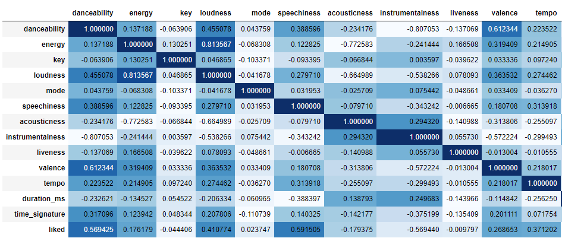
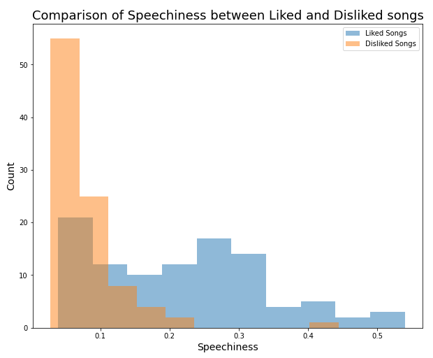
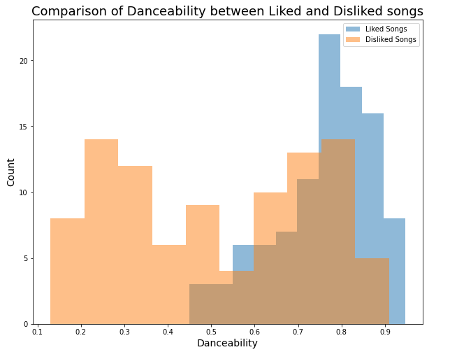
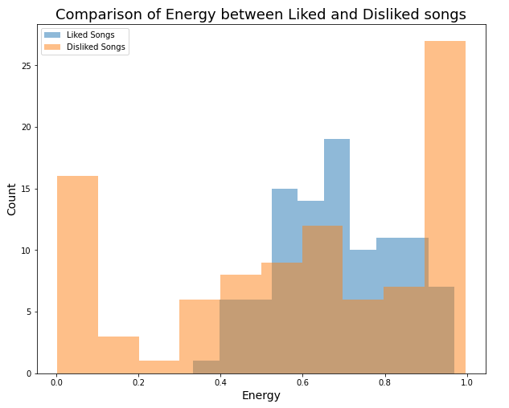
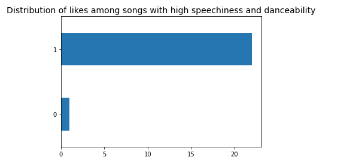
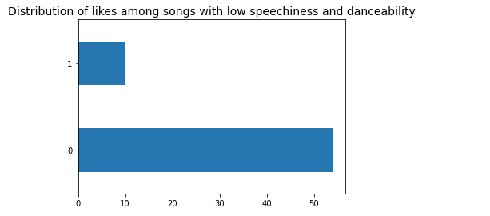
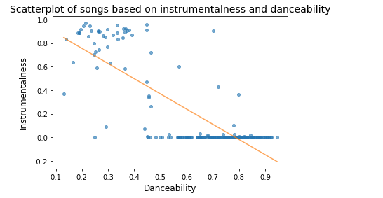

COVID-19 Sentiment Analysis Project
Exploring a subreddit devoted to COVID-19 vaccination myths
In this project, I have performed some exploratory analysis into the sentiment of posts made in the 'r/VaccineMyths' subreddit.
Data Source
Whole Project
Just Code
Correlation between features:

Visualising the comparison of features between liked and disliked songs:



Combining two features to find more causation:


Correlation between danceability and instrumentalness:
